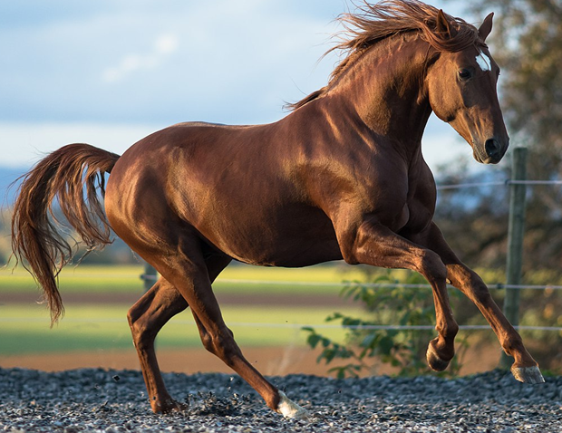
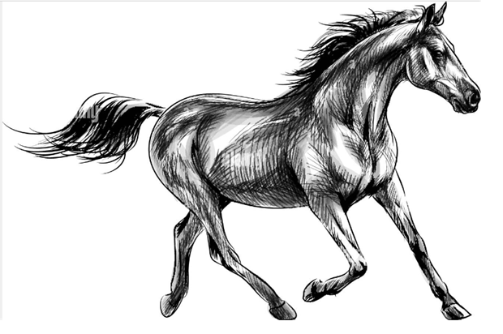

jQuery beforeAfter.js: Before After Image Viewer Example
A jQuer based, fully configurable, mobile-friendly before after viewer that can be used to compare two images with a draggable & swipeable slider.


2nd
/i.s3.glbimg.com/v1/AUTH_59edd422c0c84a879bd37670ae4f538a/internal_photos/bs/2024/8/i/GBZNQCRcSi2DmxUhklSg/rodoviaria-de-porto-alegre.jpg)
/i.s3.glbimg.com/v1/AUTH_59edd422c0c84a879bd37670ae4f538a/internal_photos/bs/2024/B/H/4lCtbgQw6LK0ZRIuR1Uw/bom-dia-rio-grande-limpo-bdrg-0305-frame-233141.png)
3nd
4nd
5nd
6nd

